PF2_01 · hooman (7.5s)
Prompt: Photorealistic 1994 35mm Kodachrome movie scene matching the starting frame. Inside the sunlit 1994 cream white-leather sedan driving through morning Los Angeles streets. Use handheld camera jolting organically on physical motion or explosive shockwave, crisp 35mm Panavision lens, stable subject focus. Exact character hair, glasses, costume, and set lighting from the starting frame. ONLY the olive-skinned man with short curly dark hair, mustache and goatee stubble, wearing a crisp 1994 black wool suit, white shirt, and skinny black tie on the right of frame actively speaks with natural jaw and lip articulation synced cleanly to the dialogue: "Nobody forced everybody to go fifty-fifty on Darren's Encino oysters, dood! My leather seats are screaming!" maintaining serious deadpan 1994 thriller gravity and closing mouth cleanly when dialogue finishes. All other characters visible in frame keep their mouths completely CLOSED and listen silently without speaking. Real human skin pores, subtle 1994 35mm film grain.
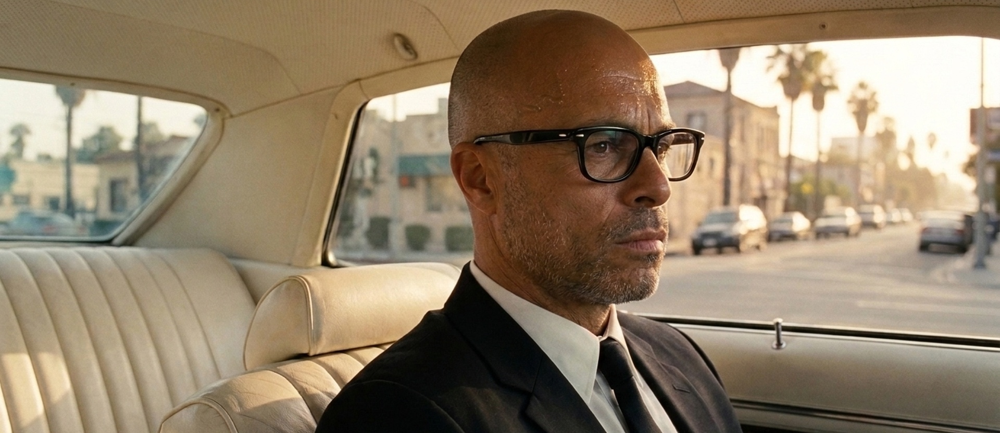
PF2_02 · damon (6.6s)
Prompt: Photorealistic 1994 35mm Kodachrome movie scene matching the starting frame. Inside the sunlit 1994 cream white-leather sedan passenger seat with sunny LA palm trees outside. Use subtle organic 35mm handheld camera breathing with tiny operator micro-movements, maintaining fixed framing distance. Exact character hair, glasses, costume, and set lighting from the starting frame. ONLY the bald man wearing rectangular black-framed glasses, tailored 1994 black wool suit, white shirt, and skinny black tie in frame actively speaks with natural jaw and lip articulation synced cleanly to the dialogue: "My Freestyle Libre hit two-ten in Culver City. Those oysters moved straight to felony indictment." maintaining serious deadpan 1994 thriller gravity and closing mouth cleanly when dialogue finishes. All other characters visible in frame keep their mouths completely CLOSED and listen silently without speaking. Real human skin pores, subtle 1994 35mm film grain.
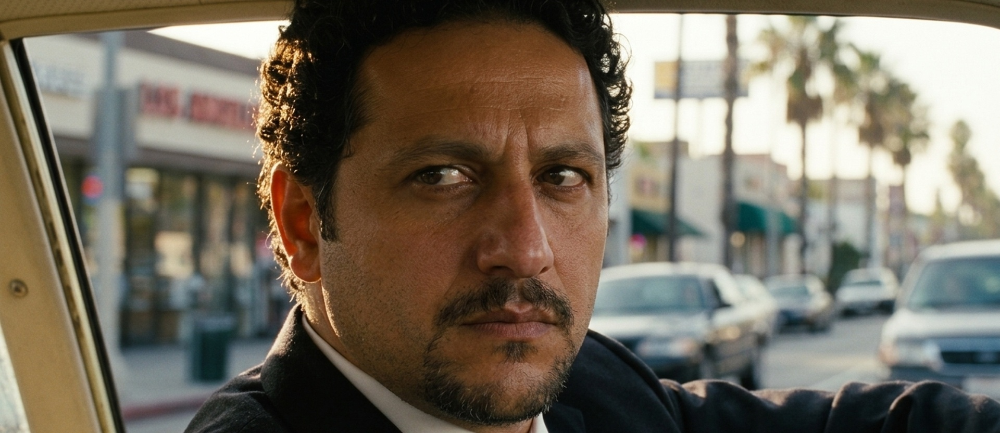
PF2_03 · hooman (6.2s)
Prompt: Photorealistic 1994 35mm Kodachrome movie scene matching the starting frame. Inside the sunlit 1994 cream white-leather sedan driver seat with morning LA street outside. Use static lock-off camera mounted on a heavy tripod, completely stationary framing. Exact character hair, glasses, costume, and set lighting from the starting frame. ONLY the olive-skinned man with short curly dark hair, mustache and goatee stubble, wearing a crisp 1994 black wool suit, white shirt, and skinny black tie in frame actively speaks with natural jaw and lip articulation synced cleanly to the dialogue: "You think Cabo escrow money and the last loperamide strip vanish at four AM by accident, huuuuh?" maintaining serious deadpan 1994 thriller gravity and closing mouth cleanly when dialogue finishes. All other characters visible in frame keep their mouths completely CLOSED and listen silently without speaking. Real human skin pores, subtle 1994 35mm film grain.

PF2_04 · damon (5.5s)
Prompt: Photorealistic 1994 35mm Kodachrome movie scene matching the starting frame. Inside the sunlit 1994 cream white-leather sedan passenger seat with sunny LA palm trees outside. Use static lock-off camera mounted on a heavy tripod, completely stationary framing. Exact character hair, glasses, costume, and set lighting from the starting frame. ONLY the bald man wearing rectangular black-framed glasses, tailored 1994 black wool suit, white shirt, and skinny black tie in frame actively speaks with natural jaw and lip articulation synced cleanly to the dialogue: "They took the golden briefcase and your Magic Cone. They left us behind on Ventura Boulevard." maintaining serious deadpan 1994 thriller gravity and closing mouth cleanly when dialogue finishes. All other characters visible in frame keep their mouths completely CLOSED and listen silently without speaking. Real human skin pores, subtle 1994 35mm film grain.
PF2_05 · hooman (6.9s)
Prompt: Photorealistic 1994 35mm Kodachrome movie scene matching the starting frame. Inside the sunlit 1994 cream white-leather sedan driving through morning Los Angeles streets. Use handheld camera jolting organically on physical motion or explosive shockwave, crisp 35mm Panavision lens, stable subject focus. Exact character hair, glasses, costume, and set lighting from the starting frame. ONLY the olive-skinned man with short curly dark hair, mustache and goatee stubble, wearing a crisp 1994 black wool suit, white shirt, and skinny black tie on the right of frame actively speaks with natural jaw and lip articulation synced cleanly to the dialogue: "Clench your core, baba! Somebody leaks brownie batter on cream leather, detailing splits fifty-fifty!" maintaining serious deadpan 1994 thriller gravity and closing mouth cleanly when dialogue finishes. All other characters visible in frame keep their mouths completely CLOSED and listen silently without speaking. Real human skin pores, subtle 1994 35mm film grain.
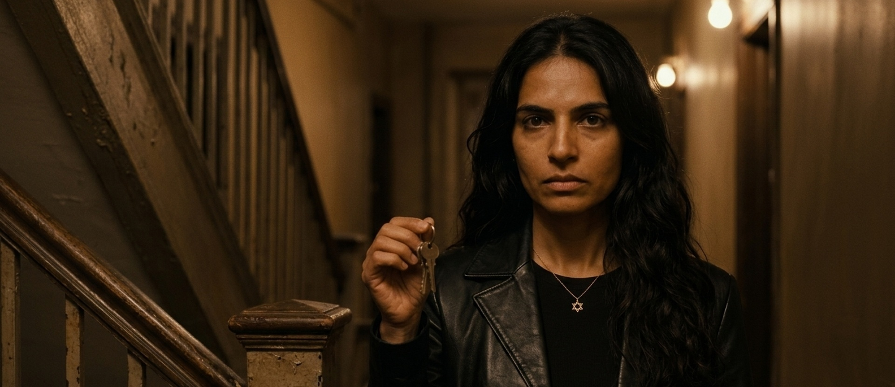
PF2_06 · sheren (5.2s)
Prompt: Photorealistic 1994 35mm Kodachrome movie scene matching the starting frame. Inside the dim bare-bulb amber tungsten 1970s apartment corridor outside Apartment 49. Use subtle organic 35mm handheld camera breathing with tiny operator micro-movements, maintaining fixed framing distance. Exact character hair, glasses, costume, and set lighting from the starting frame. ONLY the dark-haired woman in a sleek black leather jacket on the left of frame actively speaks with natural jaw and lip articulation synced cleanly to the dialogue: "Relax. I double-parked across a hydrant with no brakes. Grab the case in two minutes." maintaining serious deadpan 1994 thriller gravity and closing mouth cleanly when dialogue finishes. All other characters visible in frame keep their mouths completely CLOSED and listen silently without speaking. Real human skin pores, subtle 1994 35mm film grain.
PF2_07 · hooman (6.9s)
Prompt: Photorealistic 1994 35mm Kodachrome movie scene matching the starting frame. Inside the dim bare-bulb amber tungsten 1970s apartment corridor outside Apartment 49. Use static lock-off camera mounted on a heavy tripod, completely stationary framing. Exact character hair, glasses, costume, and set lighting from the starting frame. ONLY the olive-skinned man with short curly dark hair, mustache and goatee stubble, wearing a crisp 1994 black wool suit, white shirt, and skinny black tie on the right of frame actively speaks with natural jaw and lip articulation synced cleanly to the dialogue: "Seven-twenty-two in the morning, Damon. Are our digestive tracts synced for hostile negotiation, dood?" maintaining serious deadpan 1994 thriller gravity and closing mouth cleanly when dialogue finishes. All other characters visible in frame keep their mouths completely CLOSED and listen silently without speaking. Real human skin pores, subtle 1994 35mm film grain.
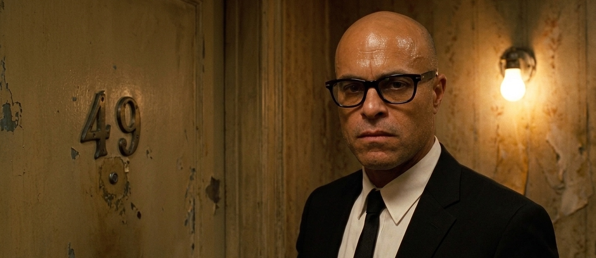
PF2_08 · damon (7.3s)
Prompt: Photorealistic 1994 35mm Kodachrome movie scene matching the starting frame. Inside the sunlit olive-green 1994 apartment beside the ajar beige-white interior doorway. Use static lock-off camera mounted on a heavy tripod, completely stationary framing. Exact character hair, glasses, costume, and set lighting from the starting frame. ONLY the bald man wearing rectangular black-framed glasses, tailored 1994 black wool suit, white shirt, and skinny black tie on the left of frame actively speaks with natural jaw and lip articulation synced cleanly to the dialogue: "I survived L.A. County jail—jail, never prison—on warm yogurt. Knock twice, clear the porcelain." maintaining serious deadpan 1994 thriller gravity and closing mouth cleanly when dialogue finishes. All other characters visible in frame keep their mouths completely CLOSED and listen silently without speaking. Real human skin pores, subtle 1994 35mm film grain.
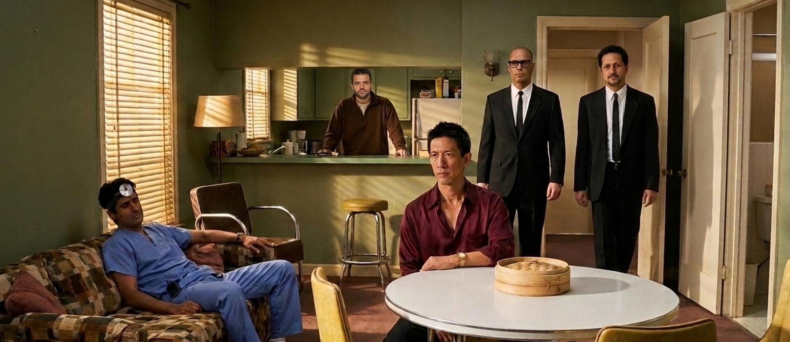
PF2_09 · hooman (8.2s)
Prompt: Photorealistic 1994 35mm Kodachrome movie scene matching the starting frame. Inside the sunlit olive-green 1994 Los Angeles apartment bathed in warm morning amber venetian-blind light. Use subtle organic 35mm handheld camera breathing with tiny operator micro-movements, maintaining fixed framing distance. Exact character hair, glasses, costume, and set lighting from the starting frame. ONLY the olive-skinned man with short curly dark hair, mustache and goatee stubble, wearing a crisp 1994 black wool suit, white shirt, and skinny black tie in frame actively speaks with natural jaw and lip articulation synced cleanly to the dialogue: "Morning, gentlemen! Fancy seeing all three stomach fugitives sipping tea beside our stolen briefcase, huuuuh?" maintaining serious deadpan 1994 thriller gravity and closing mouth cleanly when dialogue finishes. All other characters visible in frame keep their mouths completely CLOSED and listen silently without speaking. Real human skin pores, subtle 1994 35mm film grain.

PF2_10 · hooman (8.3s)
Prompt: Photorealistic 1994 35mm Kodachrome movie scene matching the starting frame. Inside the olive-green 1994 apartment beside bright glowing amber horizontal venetian blinds and cream door trim. Use static lock-off camera mounted on a heavy tripod, completely stationary framing. Exact character hair, glasses, costume, and set lighting from the starting frame. ONLY the olive-skinned man with short curly dark hair, mustache and goatee stubble, wearing a crisp 1994 black wool suit, white shirt, and skinny black tie in frame actively speaks with natural jaw and lip articulation synced cleanly to the dialogue: "Hold on—why does this studio smell like cardamom and pure bowel guilt, baba?!" maintaining serious deadpan 1994 thriller gravity and closing mouth cleanly when dialogue finishes. All other characters visible in frame keep their mouths completely CLOSED and listen silently without speaking. Real human skin pores, subtle 1994 35mm film grain.
PF2_11 · deron (4.8s)
Prompt: Photorealistic 1994 35mm Kodachrome movie scene matching the starting frame. At the white Formica breakfast table in the olive-green apartment beside bamboo har gow steamer, teacup, and Po Chai Pills box. Use static lock-off camera mounted on a heavy tripod, completely stationary framing. Exact character hair, glasses, costume, and set lighting from the starting frame. ONLY the East Asian man with short spiky black hair wearing an open-collar burgundy silk shirt and gold wristwatch in frame actively speaks with natural jaw and lip articulation synced cleanly to the dialogue: "Aiya! Why scream at seven AM lah? Oysters exploded because you served cold tap water!" maintaining serious deadpan 1994 thriller gravity and closing mouth cleanly when dialogue finishes. All other characters visible in frame keep their mouths completely CLOSED and listen silently without speaking. Real human skin pores, subtle 1994 35mm film grain.
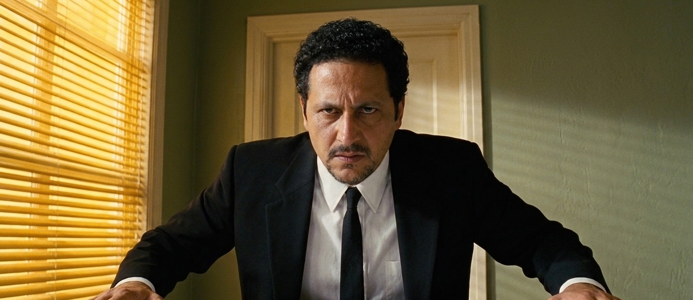
PF2_12 · hooman (7.3s)
Prompt: Photorealistic 1994 35mm Kodachrome movie scene matching the starting frame. Inside the olive-green 1994 apartment beside bright glowing amber horizontal venetian blinds and cream door trim. Use measured slow linear dolly push-in along fixed axis on weighted rails. Exact character hair, glasses, costume, and set lighting from the starting frame. ONLY the olive-skinned man with short curly dark hair, mustache and goatee stubble, wearing a crisp 1994 black wool suit, white shirt, and skinny black tie in frame actively speaks with natural jaw and lip articulation synced cleanly to the dialogue: "Tap water? Listen, Deron! Twenty-eight thousand dollars of cream calfskin in my trunk nearly drowned in brown tsunami!" maintaining serious deadpan 1994 thriller gravity and closing mouth cleanly when dialogue finishes. All other characters visible in frame keep their mouths completely CLOSED and listen silently without speaking. Real human skin pores, subtle 1994 35mm film grain.

PF2_13 · damon (5.7s)
Prompt: Photorealistic 1994 35mm Kodachrome movie scene matching the starting frame. Inside the sunlit olive-green 1994 apartment beside the ajar beige-white interior doorway. Use static lock-off camera mounted on a heavy tripod, completely stationary framing. Exact character hair, glasses, costume, and set lighting from the starting frame. ONLY the bald man wearing rectangular black-framed glasses, tailored 1994 black wool suit, white shirt, and skinny black tie in frame actively speaks with natural jaw and lip articulation synced cleanly to the dialogue: "Hand over the loperamide, Deron. Resting heart rate's spiking and I'm holding a tidal wave." maintaining serious deadpan 1994 thriller gravity and closing mouth cleanly when dialogue finishes. All other characters visible in frame keep their mouths completely CLOSED and listen silently without speaking. Real human skin pores, subtle 1994 35mm film grain.
PF2_14 · deron (5.2s)
Prompt: Photorealistic 1994 35mm Kodachrome movie scene matching the starting frame. At the white Formica breakfast table in the olive-green apartment beside bamboo har gow steamer, teacup, and Po Chai Pills box. Use static lock-off camera mounted on a heavy tripod, completely stationary framing. Exact character hair, glasses, costume, and set lighting from the starting frame. ONLY the East Asian man with short spiky black hair wearing an open-collar burgundy silk shirt and gold wristwatch in frame actively speaks with natural jaw and lip articulation synced cleanly to the dialogue: "Western pills weak like Clippers defense lah! Take Po Chai Pill, boiling soup, restore lower Qi!" maintaining serious deadpan 1994 thriller gravity and closing mouth cleanly when dialogue finishes. All other characters visible in frame keep their mouths completely CLOSED and listen silently without speaking. Real human skin pores, subtle 1994 35mm film grain.

PF2_15 · zach (8.3s)
Prompt: Photorealistic 1994 35mm Kodachrome movie scene matching the starting frame. Inside the sunlit 1970s olive-green apartment kitchen pass-through with vintage cream refrigerator behind. Use static lock-off camera mounted on a heavy tripod, completely stationary framing. Exact character hair, glasses, costume, and set lighting from the starting frame. ONLY the bearded man wearing a brown Alo crewneck pullover in frame actively speaks with natural jaw and lip articulation synced cleanly to the dialogue: "Wait, guys—ChatGPT scored our symptoms Bristol type-seven liquid chaos from Hooman's cheap oyster seed oil, lol." maintaining serious deadpan 1994 thriller gravity and closing mouth cleanly when dialogue finishes. All other characters visible in frame keep their mouths completely CLOSED and listen silently without speaking. Real human skin pores, subtle 1994 35mm film grain.
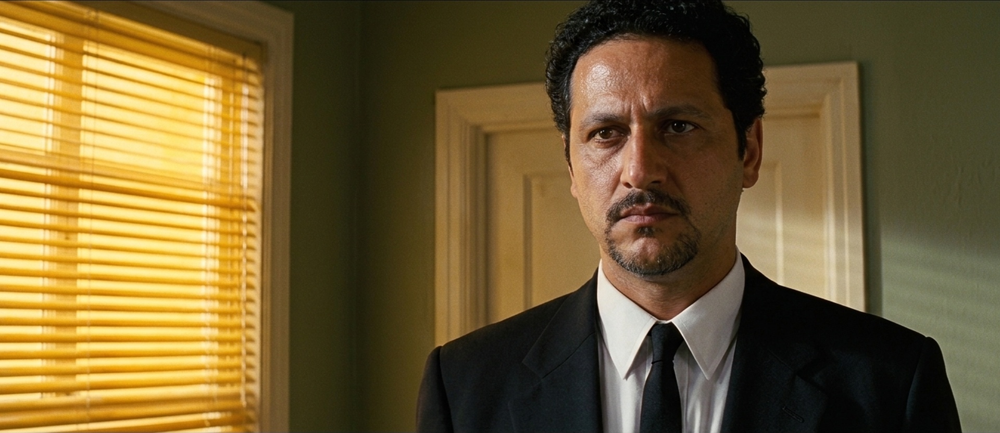
PF2_16 · hooman (9.8s)
Prompt: Photorealistic 1994 35mm Kodachrome movie scene matching the starting frame. Inside the olive-green 1994 apartment beside bright glowing amber horizontal venetian blinds and cream door trim. Use subtle organic 35mm handheld camera breathing with tiny operator micro-movements, maintaining fixed framing distance. Exact character hair, glasses, costume, and set lighting from the starting frame. ONLY the olive-skinned man with short curly dark hair, mustache and goatee stubble, wearing a crisp 1994 black wool suit, white shirt, and skinny black tie in frame actively speaks with natural jaw and lip articulation synced cleanly to the dialogue: "Seed oil?! Cousin Darren cold-pressed Encino avocado oil! Keep ChatGPT out of my gastro-intestinal spreadsheets!" maintaining serious deadpan 1994 thriller gravity and closing mouth cleanly when dialogue finishes. All other characters visible in frame keep their mouths completely CLOSED and listen silently without speaking. Real human skin pores, subtle 1994 35mm film grain.
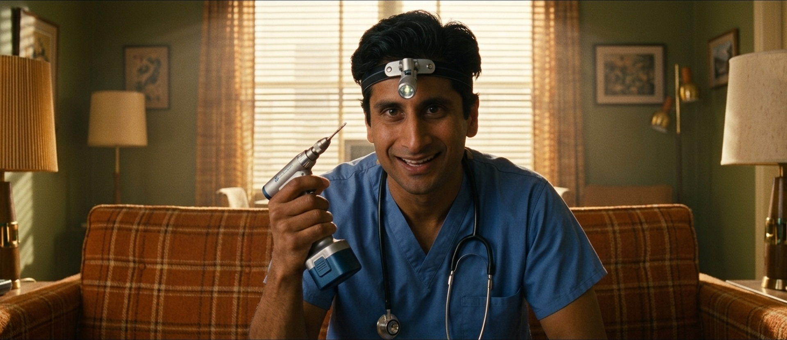
PF2_17 · ajay (6.3s)
Prompt: Photorealistic 1994 35mm Kodachrome movie scene matching the starting frame. On the orange-brown 1970s plaid apartment sofa bathed in warm golden window light. Use static lock-off camera mounted on a heavy tripod, completely stationary framing. Exact character hair, glasses, costume, and set lighting from the starting frame. ONLY the Indian-American man in blue Kaiser surgical scrubs with stethoscope and silver forehead surgical headlamp in frame actively speaks with natural jaw and lip articulation synced cleanly to the dialogue: "Forget pills, yaar! Explosive diarrhea is vagus-nerve hyperactivity! Lie flat—I drill one electrode fast fast!" maintaining serious deadpan 1994 thriller gravity and closing mouth cleanly when dialogue finishes. All other characters visible in frame keep their mouths completely CLOSED and listen silently without speaking. Real human skin pores, subtle 1994 35mm film grain.
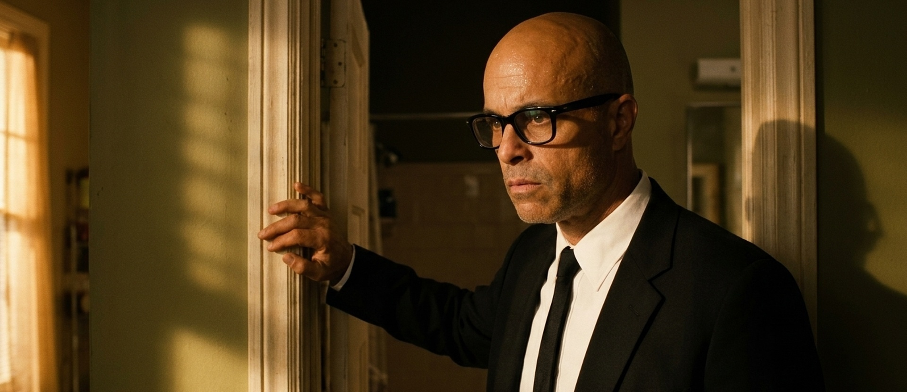
PF2_18 · damon (6.4s)
Prompt: Photorealistic 1994 35mm Kodachrome movie scene matching the starting frame. Inside the sunlit olive-green 1994 apartment beside the ajar beige-white interior doorway. Use static lock-off camera mounted on a heavy tripod, completely stationary framing. Exact character hair, glasses, costume, and set lighting from the starting frame. ONLY the bald man wearing rectangular black-framed glasses, tailored 1994 black wool suit, white shirt, and skinny black tie in frame actively speaks with natural jaw and lip articulation synced cleanly to the dialogue: "Drop the surgical drill, Ajay. Why is warm brown steam sliding underneath that bathroom door?" maintaining serious deadpan 1994 thriller gravity and closing mouth cleanly when dialogue finishes. All other characters visible in frame keep their mouths completely CLOSED and listen silently without speaking. Real human skin pores, subtle 1994 35mm film grain.

PF2_19 · hooman (6.8s)
Prompt: Photorealistic 1994 35mm Kodachrome movie scene matching the starting frame. Inside the olive-green 1994 apartment beside bright glowing amber horizontal venetian blinds and cream door trim. Use static lock-off camera mounted on a heavy tripod, completely stationary framing. Exact character hair, glasses, costume, and set lighting from the starting frame. ONLY the olive-skinned man with short curly dark hair, mustache and goatee stubble, wearing a crisp 1994 black wool suit, white shirt, and skinny black tie in frame actively speaks with natural jaw and lip articulation synced cleanly to the dialogue: "Wait a second... who left a pressurized Encino pressure-cooker bubbling inside Deron's bathroom right now?!" maintaining serious deadpan 1994 thriller gravity and closing mouth cleanly when dialogue finishes. All other characters visible in frame keep their mouths completely CLOSED and listen silently without speaking. Real human skin pores, subtle 1994 35mm film grain.
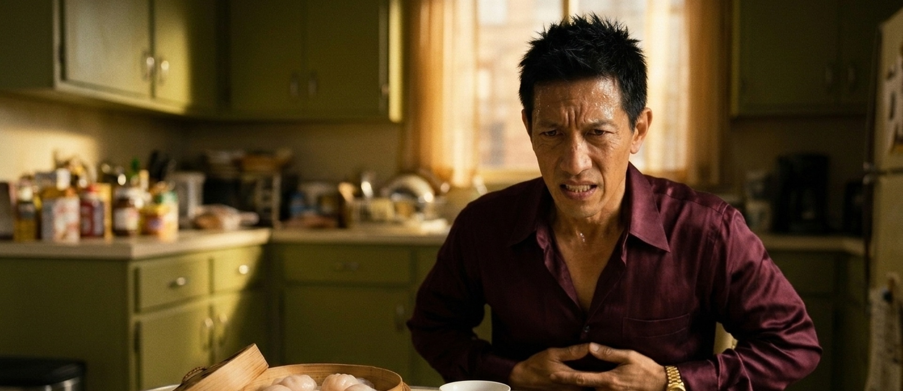
PF2_20 · deron (7.0s)
Prompt: Photorealistic 1994 35mm Kodachrome movie scene matching the starting frame. At the white Formica breakfast table in the olive-green apartment beside bamboo har gow steamer, teacup, and Po Chai Pills box. Use subtle organic 35mm handheld camera breathing with tiny operator micro-movements, maintaining fixed framing distance. Exact character hair, glasses, costume, and set lighting from the starting frame. ONLY the East Asian man with short spiky black hair wearing an open-collar burgundy silk shirt and gold wristwatch in frame actively speaks with natural jaw and lip articulation synced cleanly to the dialogue: "Aiya... maybe third chili-oil wonton bad idea lah. Nobody touch knob—porcelain pressure at maximum redline!" maintaining serious deadpan 1994 thriller gravity and closing mouth cleanly when dialogue finishes. All other characters visible in frame keep their mouths completely CLOSED and listen silently without speaking. Real human skin pores, subtle 1994 35mm film grain.
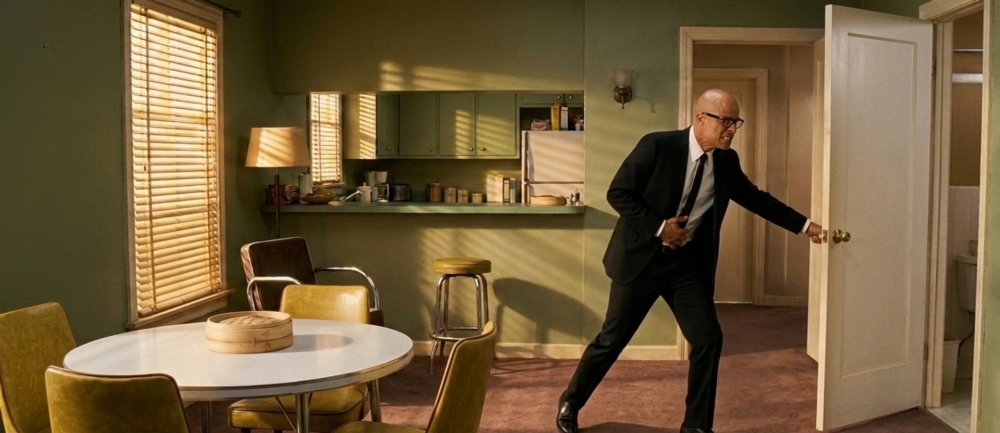
PF2_21 · damon (4.5s)
Prompt: Photorealistic 1994 35mm Kodachrome movie scene matching the starting frame. Inside the sunlit olive-green 1994 apartment beside the ajar beige-white interior doorway. Use smooth continuous lateral tracking move matching blocked screen direction. Exact character hair, glasses, costume, and set lighting from the starting frame. ONLY the bald man wearing rectangular black-framed glasses, tailored 1994 black wool suit, white shirt, and skinny black tie on the left of frame actively speaks with natural jaw and lip articulation synced cleanly to the dialogue: "Out of my way, everybody! I raced Lake Placid on worse—I'm claiming this toilet first!" maintaining serious deadpan 1994 thriller gravity and closing mouth cleanly when dialogue finishes. All other characters visible in frame keep their mouths completely CLOSED and listen silently without speaking. Real human skin pores, subtle 1994 35mm film grain.
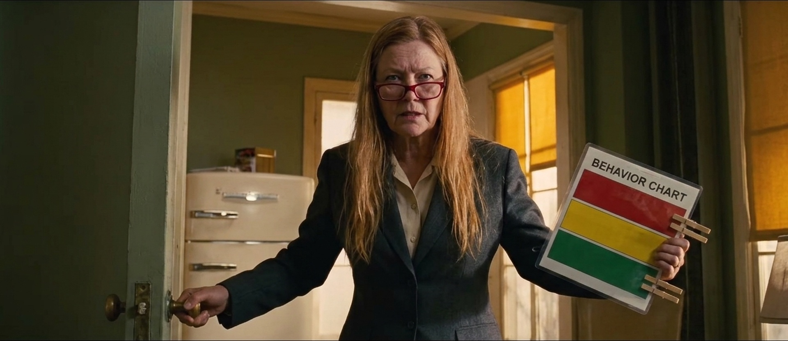
PF2_22 · gigi (8.2s)
Prompt: Photorealistic 1994 35mm Kodachrome movie scene matching the starting frame. At the open sunlit apartment front doorway with retro olive kitchen cabinets behind. Use static lock-off camera mounted on a heavy tripod, completely stationary framing. Exact character hair, glasses, costume, and set lighting from the starting frame. ONLY the 67-year-old woman with long strawberry-blonde hair and crimson-framed eyeglasses wearing a tailored charcoal blazer in frame actively speaks with natural jaw and lip articulation synced cleanly to the dialogue: "One, two, three, eyes on me! Code-brown biohazard in four-nine—everybody's clothespin goes straight onto RED!" maintaining serious deadpan 1994 thriller gravity and closing mouth cleanly when dialogue finishes. All other characters visible in frame keep their mouths completely CLOSED and listen silently without speaking. Real human skin pores, subtle 1994 35mm film grain.
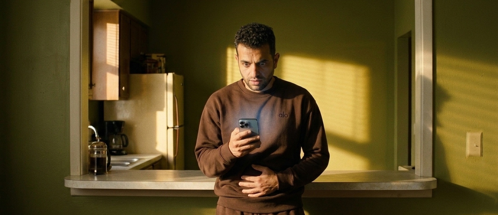
PF2_23 · zach (7.5s)
Prompt: Photorealistic 1994 35mm Kodachrome movie scene matching the starting frame. Inside the sunlit 1970s olive-green apartment kitchen pass-through with vintage cream refrigerator behind. Use static lock-off camera mounted on a heavy tripod, completely stationary framing. Exact character hair, glasses, costume, and set lighting from the starting frame. ONLY the bearded man wearing a brown Alo crewneck pullover in frame actively speaks with natural jaw and lip articulation synced cleanly to the dialogue: "Gigi, o.m.g., Elon just posted a gut protocol on X—oh no, my stomach dropped, lol!" maintaining serious deadpan 1994 thriller gravity and closing mouth cleanly when dialogue finishes. All other characters visible in frame keep their mouths completely CLOSED and listen silently without speaking. Real human skin pores, subtle 1994 35mm film grain.
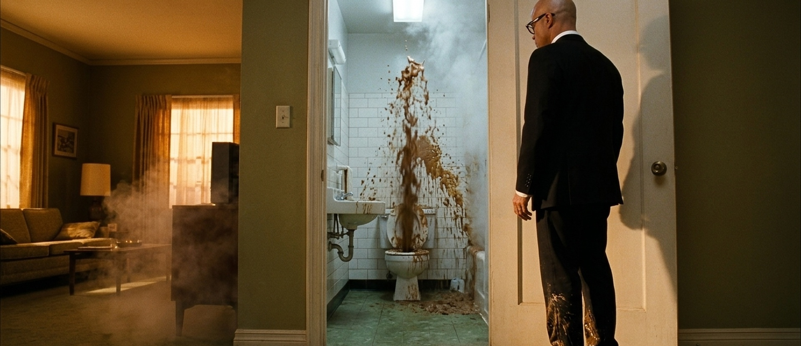
PF2_24 · sfx (4.8s)
Prompt: Photorealistic 1994 35mm Kodachrome movie scene matching the starting frame. Looking through the open 1970s white-tiled apartment bathroom doorway as thick chunky brown practical-FX sludge erupts with billowing steam. Use handheld camera jolting organically on physical motion or explosive shockwave, crisp 35mm Panavision lens, stable subject focus. Practical movie-prop slapstick physics: thick chunky brown liquid sludge blasts dynamically across tile and linoleum with billowing steam and realistic splashes while clothed character braces/reacts naturally. 1994 Kodak 5248 35mm film grain, authentic contrast.
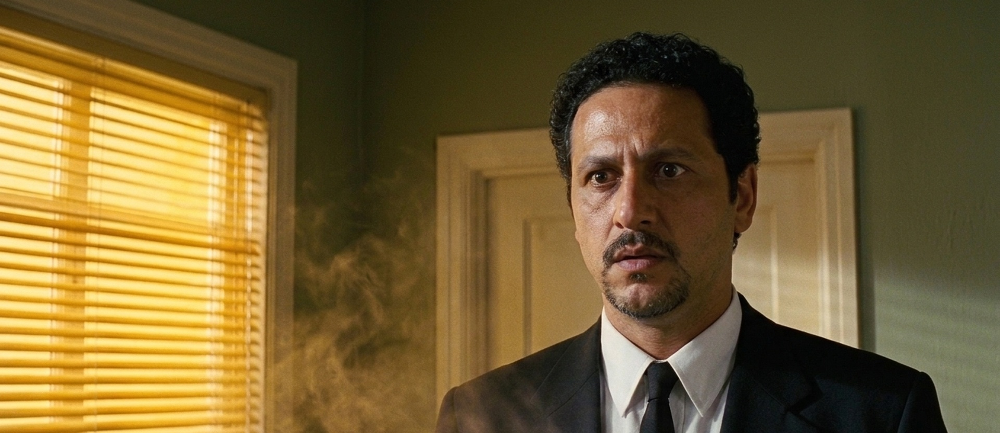
PF2_25 · hooman (5.9s)
Prompt: Photorealistic 1994 35mm Kodachrome movie scene matching the starting frame. Inside the olive-green 1994 apartment beside bright glowing amber horizontal venetian blinds and cream door trim. Use subtle organic 35mm handheld camera breathing with tiny operator micro-movements, maintaining fixed framing distance. Exact character hair, glasses, costume, and set lighting from the starting frame. ONLY the olive-skinned man with short curly dark hair, mustache and goatee stubble, wearing a crisp 1994 black wool suit, white shirt, and skinny black tie in frame actively speaks with natural jaw and lip articulation synced cleanly to the dialogue: "Holy mother of hair plugs, dood! Did somebody just detonate a saffron bomb in plumbing, huuuuh?" maintaining serious deadpan 1994 thriller gravity and closing mouth cleanly when dialogue finishes. All other characters visible in frame keep their mouths completely CLOSED and listen silently without speaking. Real human skin pores, subtle 1994 35mm film grain.
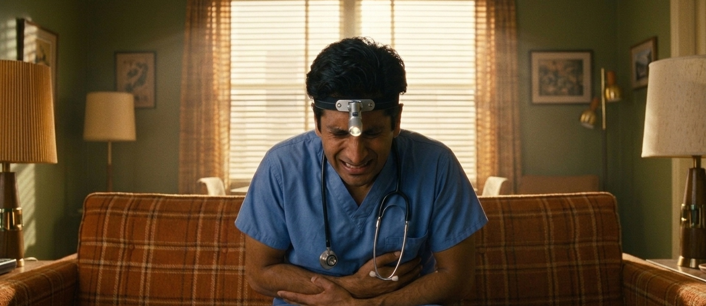
PF2_26 · ajay (4.9s)
Prompt: Photorealistic 1994 35mm Kodachrome movie scene matching the starting frame. On the orange-brown 1970s plaid apartment sofa bathed in warm golden window light. Use subtle organic 35mm handheld camera breathing with tiny operator micro-movements, maintaining fixed framing distance. Exact character hair, glasses, costume, and set lighting from the starting frame. ONLY the Indian-American man in blue Kaiser surgical scrubs with stethoscope and silver forehead surgical headlamp in frame actively speaks with natural jaw and lip articulation synced cleanly to the dialogue: "Arre baap re! Even LeBron cannot defend sphincter failure at one hundred thirty hertz, yaar!" maintaining serious deadpan 1994 thriller gravity and closing mouth cleanly when dialogue finishes. All other characters visible in frame keep their mouths completely CLOSED and listen silently without speaking. Real human skin pores, subtle 1994 35mm film grain.
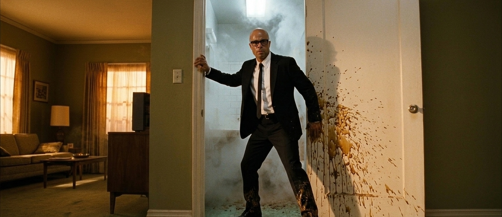
PF2_27 · damon (5.4s)
Prompt: Photorealistic 1994 35mm Kodachrome movie scene matching the starting frame. Inside the sunlit olive-green 1994 apartment beside the ajar beige-white interior doorway. Use static lock-off camera mounted on a heavy tripod, completely stationary framing. Exact character hair, glasses, costume, and set lighting from the starting frame. ONLY the bald man wearing rectangular black-framed glasses, tailored 1994 black wool suit, white shirt, and skinny black tie in frame actively speaks with natural jaw and lip articulation synced cleanly to the dialogue: "Shut the door, Gigi. It blew the wax flange clean off and ruined my loafers." maintaining serious deadpan 1994 thriller gravity and closing mouth cleanly when dialogue finishes. All other characters visible in frame keep their mouths completely CLOSED and listen silently without speaking. Real human skin pores, subtle 1994 35mm film grain.
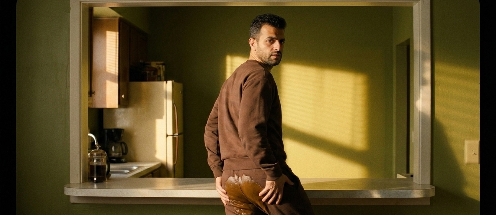
PF2_28 · zach (6.1s)
Prompt: Photorealistic 1994 35mm Kodachrome movie scene matching the starting frame. Inside the sunlit 1970s olive-green apartment kitchen pass-through with vintage cream refrigerator behind. Use subtle organic 35mm handheld camera breathing with tiny operator micro-movements, maintaining fixed framing distance. Exact character hair, glasses, costume, and set lighting from the starting frame. ONLY the bearded man wearing a brown Alo crewneck pullover in frame actively speaks with natural jaw and lip articulation synced cleanly to the dialogue: "Nobody look behind the island—my cortisol spiked and my brown Alo joggers just surrendered, lol!" maintaining serious deadpan 1994 thriller gravity and closing mouth cleanly when dialogue finishes. All other characters visible in frame keep their mouths completely CLOSED and listen silently without speaking. Real human skin pores, subtle 1994 35mm film grain.
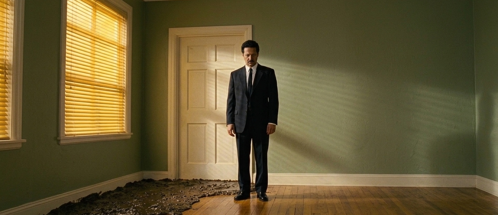
PF2_29 · hooman (5.3s)
Prompt: Photorealistic 1994 35mm Kodachrome movie scene matching the starting frame. Inside the olive-green 1994 apartment beside bright glowing amber horizontal venetian blinds and cream door trim. Use static lock-off camera mounted on a heavy tripod, completely stationary framing. Exact character hair, glasses, costume, and set lighting from the starting frame. ONLY the olive-skinned man with short curly dark hair, mustache and goatee stubble, wearing a crisp 1994 black wool suit, white shirt, and skinny black tie in frame actively speaks with natural jaw and lip articulation synced cleanly to the dialogue: "Three grown men, one flooded toilet, zero insurance! Bring out that gold Magic Cone, baba!" maintaining serious deadpan 1994 thriller gravity and closing mouth cleanly when dialogue finishes. All other characters visible in frame keep their mouths completely CLOSED and listen silently without speaking. Real human skin pores, subtle 1994 35mm film grain.
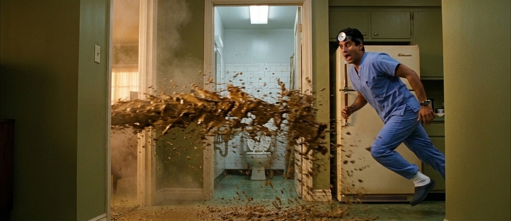
PF2_30 · sfx (4.8s)
Prompt: Photorealistic 1994 35mm Kodachrome movie scene matching the starting frame. Looking through the open 1970s white-tiled apartment bathroom doorway as thick chunky brown practical-FX sludge erupts with billowing steam. Use handheld camera jolting organically on physical motion or explosive shockwave, crisp 35mm Panavision lens, stable subject focus. Practical movie-prop slapstick physics: thick chunky brown liquid sludge blasts dynamically across tile and linoleum with billowing steam and realistic splashes while clothed character braces/reacts naturally. 1994 Kodak 5248 35mm film grain, authentic contrast.
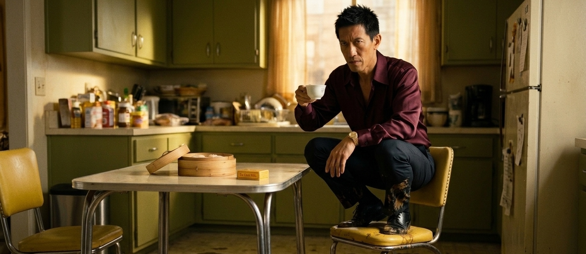
PF2_31 · deron (6.1s)
Prompt: Photorealistic 1994 35mm Kodachrome movie scene matching the starting frame. At the white Formica breakfast table in the olive-green apartment beside bamboo har gow steamer, teacup, and Po Chai Pills box. Use static lock-off camera mounted on a heavy tripod, completely stationary framing. Exact character hair, glasses, costume, and set lighting from the starting frame. ONLY the East Asian man with short spiky black hair wearing an open-collar burgundy silk shirt and gold wristwatch in frame actively speaks with natural jaw and lip articulation synced cleanly to the dialogue: "Aiya! Why flood smell like Encino saffron?! Thank goodness my super-clone gold watch stays waterproof lah!" maintaining serious deadpan 1994 thriller gravity and closing mouth cleanly when dialogue finishes. All other characters visible in frame keep their mouths completely CLOSED and listen silently without speaking. Real human skin pores, subtle 1994 35mm film grain.
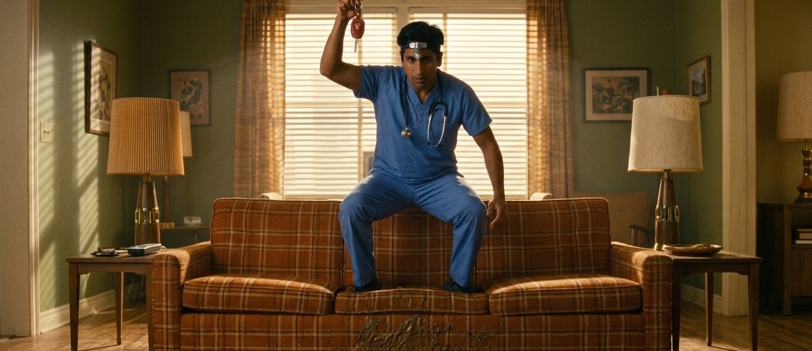
PF2_32 · ajay (4.6s)
Prompt: Photorealistic 1994 35mm Kodachrome movie scene matching the starting frame. On the orange-brown 1970s plaid apartment sofa bathed in warm golden window light. Use static lock-off camera mounted on a heavy tripod, completely stationary framing. Exact character hair, glasses, costume, and set lighting from the starting frame. ONLY the Indian-American man in blue Kaiser surgical scrubs with stethoscope and silver forehead surgical headlamp in frame actively speaks with natural jaw and lip articulation synced cleanly to the dialogue: "Save the 1984 Porsche keys, yaar! Deep brain stimulation cannot seal cast-iron sewage pipe!" maintaining serious deadpan 1994 thriller gravity and closing mouth cleanly when dialogue finishes. All other characters visible in frame keep their mouths completely CLOSED and listen silently without speaking. Real human skin pores, subtle 1994 35mm film grain.
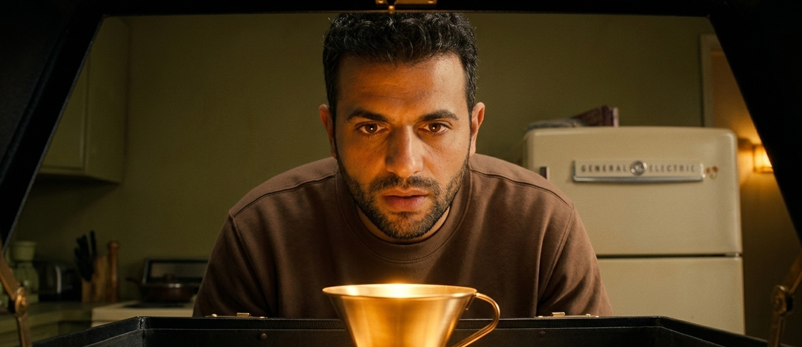
PF2_33 · zach (7.0s)
Prompt: Photorealistic 1994 35mm Kodachrome movie scene matching the starting frame. Looking upward from inside the glowing golden-amber open leather briefcase inside the olive-green kitchen. Use measured slow linear dolly pull-out revealing surrounding space. Exact character hair, glasses, costume, and set lighting from the starting frame. ONLY the bearded man wearing a brown Alo crewneck pullover in frame actively speaks with natural jaw and lip articulation synced cleanly to the dialogue: "Look inside the briefcase... the anti-diarrheal blister pack and solid-gold Magic Cone stayed completely dry." maintaining serious deadpan 1994 thriller gravity and closing mouth cleanly when dialogue finishes. All other characters visible in frame keep their mouths completely CLOSED and listen silently without speaking. Real human skin pores, subtle 1994 35mm film grain.
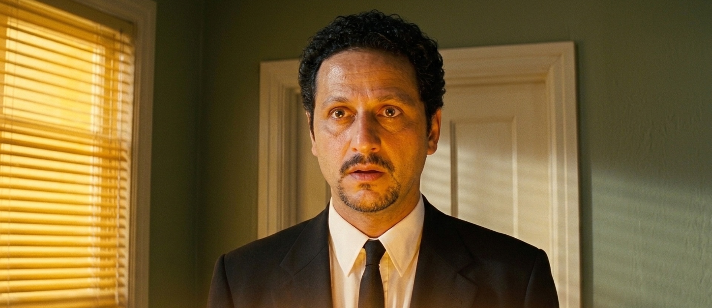
PF2_34 · hooman (6.2s)
Prompt: Photorealistic 1994 35mm Kodachrome movie scene matching the starting frame. Inside the olive-green 1994 apartment beside bright glowing amber horizontal venetian blinds and cream door trim. Use static lock-off camera mounted on a heavy tripod, completely stationary framing. Exact character hair, glasses, costume, and set lighting from the starting frame. ONLY the olive-skinned man with short curly dark hair, mustache and goatee stubble, wearing a crisp 1994 black wool suit, white shirt, and skinny black tie in frame actively speaks with natural jaw and lip articulation synced cleanly to the dialogue: "Look at that shine, boys. Aerospace aluminum—cleans every choked pipe in sixty seconds, dood!" maintaining serious deadpan 1994 thriller gravity and closing mouth cleanly when dialogue finishes. All other characters visible in frame keep their mouths completely CLOSED and listen silently without speaking. Real human skin pores, subtle 1994 35mm film grain.
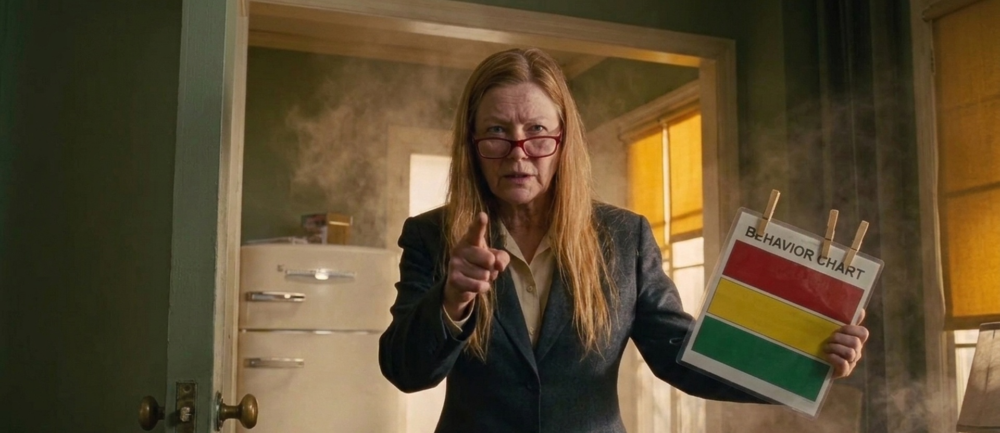
PF2_35 · gigi (6.8s)
Prompt: Photorealistic 1994 35mm Kodachrome movie scene matching the starting frame. At the open sunlit apartment front doorway with retro olive kitchen cabinets behind. Use static lock-off camera mounted on a heavy tripod, completely stationary framing. Exact character hair, glasses, costume, and set lighting from the starting frame. ONLY the 67-year-old woman with long strawberry-blonde hair and crimson-framed eyeglasses wearing a tailored charcoal blazer in frame actively speaks with natural jaw and lip articulation synced cleanly to the dialogue: "Put that golden funnel down! Grab a mop and unfollow Elon Musk right now or face detention!" maintaining serious deadpan 1994 thriller gravity and closing mouth cleanly when dialogue finishes. All other characters visible in frame keep their mouths completely CLOSED and listen silently without speaking. Real human skin pores, subtle 1994 35mm film grain.
PF2_36 · damon (5.6s)
Prompt: Photorealistic 1994 35mm Kodachrome movie scene matching the starting frame. Inside the sunlit olive-green 1994 apartment beside the ajar beige-white interior doorway. Use static lock-off camera mounted on a heavy tripod, completely stationary framing. Exact character hair, glasses, costume, and set lighting from the starting frame. ONLY the bald man wearing rectangular black-framed glasses, tailored 1994 black wool suit, white shirt, and skinny black tie in frame actively speaks with natural jaw and lip articulation synced cleanly to the dialogue: "Chew two loperamide, stay under Zone-four heart rate, and never discuss those oysters under oath." maintaining serious deadpan 1994 thriller gravity and closing mouth cleanly when dialogue finishes. All other characters visible in frame keep their mouths completely CLOSED and listen silently without speaking. Real human skin pores, subtle 1994 35mm film grain.
PF2_37 · ajay (6.5s)
Prompt: Photorealistic 1994 35mm Kodachrome movie scene matching the starting frame. On the orange-brown 1970s plaid apartment sofa bathed in warm golden window light. Use subtle organic 35mm handheld camera breathing with tiny operator micro-movements, maintaining fixed framing distance. Exact character hair, glasses, costume, and set lighting from the starting frame. ONLY the Indian-American man in blue Kaiser surgical scrubs with stethoscope and silver forehead surgical headlamp in frame actively speaks with natural jaw and lip articulation synced cleanly to the dialogue: "Amazing parasympathetic recovery, yaar! Colon calmed immediately once everybody confirmed Hooman went fifty-fifty on buffet!" maintaining serious deadpan 1994 thriller gravity and closing mouth cleanly when dialogue finishes. All other characters visible in frame keep their mouths completely CLOSED and listen silently without speaking. Real human skin pores, subtle 1994 35mm film grain.
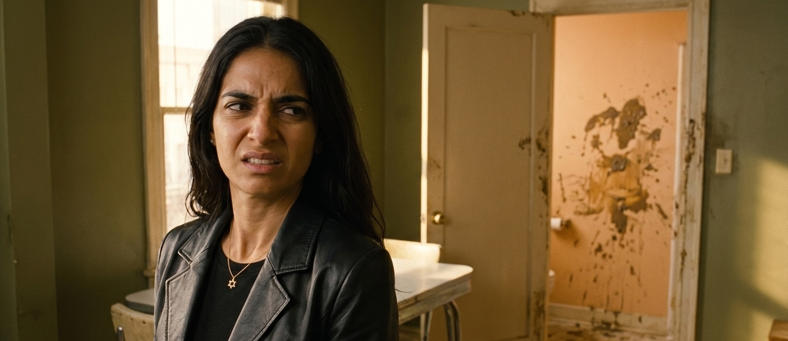
PF2_38 · sheren (6.3s)
Prompt: Photorealistic 1994 35mm Kodachrome movie scene matching the starting frame. Inside the sunlit olive-green 1994 Los Angeles apartment bathed in warm morning amber venetian-blind light. Use smooth continuous lateral tracking move matching blocked screen direction. Exact character hair, glasses, costume, and set lighting from the starting frame. ONLY the dark-haired woman in a sleek black leather jacket on the left of frame actively speaks with natural jaw and lip articulation synced cleanly to the dialogue: "Yikes. Besides the diarrhea lake, that bathroom grout undertone is way too orange. Grab the case!" maintaining serious deadpan 1994 thriller gravity and closing mouth cleanly when dialogue finishes. All other characters visible in frame keep their mouths completely CLOSED and listen silently without speaking. Real human skin pores, subtle 1994 35mm film grain.

PF2_39 · deron (4.9s)
Prompt: Photorealistic 1994 35mm Kodachrome movie scene matching the starting frame. At the white Formica breakfast table in the olive-green apartment beside bamboo har gow steamer, teacup, and Po Chai Pills box. Use static lock-off camera mounted on a heavy tripod, completely stationary framing. Exact character hair, glasses, costume, and set lighting from the starting frame. ONLY the East Asian man with short spiky black hair wearing an open-collar burgundy silk shirt and gold wristwatch in frame actively speaks with natural jaw and lip articulation synced cleanly to the dialogue: "Next Nomad brunch strictly at San Gabriel porridge house lah! Zero dairy, better porcelain!" maintaining serious deadpan 1994 thriller gravity and closing mouth cleanly when dialogue finishes. All other characters visible in frame keep their mouths completely CLOSED and listen silently without speaking. Real human skin pores, subtle 1994 35mm film grain.
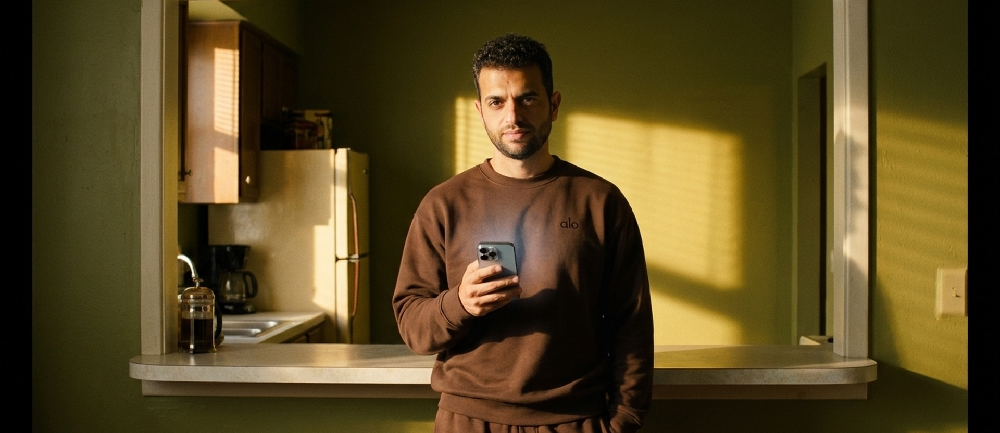
PF2_40 · zach (7.4s)
Prompt: Photorealistic 1994 35mm Kodachrome movie scene matching the starting frame. Inside the sunlit 1970s olive-green apartment kitchen pass-through with vintage cream refrigerator behind. Use static lock-off camera mounted on a heavy tripod, completely stationary framing. Exact character hair, glasses, costume, and set lighting from the starting frame. ONLY the bearded man wearing a brown Alo crewneck pullover in frame actively speaks with natural jaw and lip articulation synced cleanly to the dialogue: "Just ordered six replacement Alo joggers, RH bathmats, and three olive trees to absorb smell, lol." maintaining serious deadpan 1994 thriller gravity and closing mouth cleanly when dialogue finishes. All other characters visible in frame keep their mouths completely CLOSED and listen silently without speaking. Real human skin pores, subtle 1994 35mm film grain.
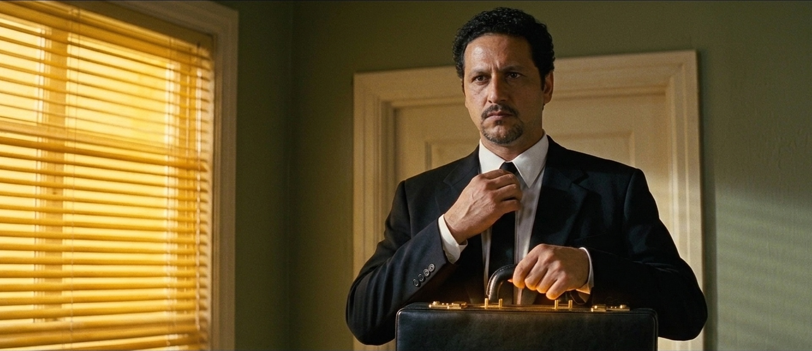
PF2_41 · hooman (6.9s)
Prompt: Photorealistic 1994 35mm Kodachrome movie scene matching the starting frame. Inside the olive-green 1994 apartment beside bright glowing amber horizontal venetian blinds and cream door trim. Use measured slow linear dolly push-in along fixed axis on weighted rails. Exact character hair, glasses, costume, and set lighting from the starting frame. ONLY the olive-skinned man with short curly dark hair, mustache and goatee stubble, wearing a crisp 1994 black wool suit, white shirt, and skinny black tie in frame actively speaks with natural jaw and lip articulation synced cleanly to the dialogue: "Blessed is he who survives Darren's oyster diarrhea, clutches the Cabo briefcase, and walks clean out!" maintaining serious deadpan 1994 thriller gravity and closing mouth cleanly when dialogue finishes. All other characters visible in frame keep their mouths completely CLOSED and listen silently without speaking. Real human skin pores, subtle 1994 35mm film grain.
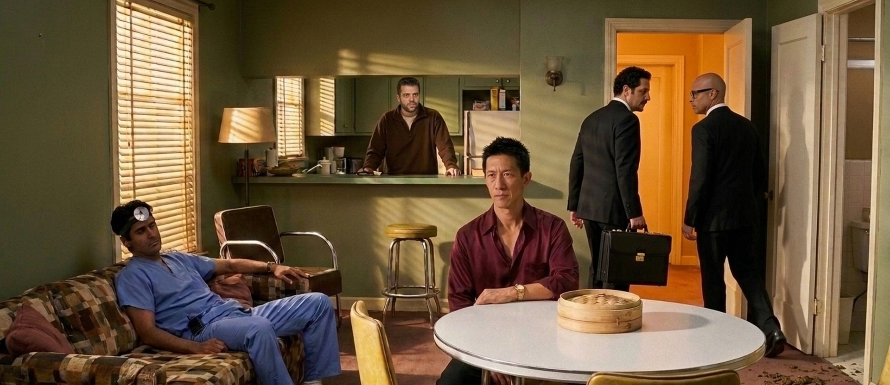
PF2_42 · damon (5.8s)
Prompt: Photorealistic 1994 35mm Kodachrome movie scene matching the starting frame. Inside the sunlit olive-green 1994 Los Angeles apartment bathed in warm morning amber venetian-blind light. Use static lock-off camera mounted on a heavy tripod, completely stationary framing. Exact character hair, glasses, costume, and set lighting from the starting frame. ONLY the bald man wearing rectangular black-framed glasses, wearing a plain solid matte-black wool suit jacket and plain solid matte-black wool suit trousers all the way down to plain black leather dress shoes on the right of frame actively speaks with natural jaw and lip articulation synced cleanly to the dialogue: "Word. Let's grab coffee far away from the four-oh-five. County jail had cleaner ventilation." maintaining serious deadpan 1994 thriller gravity and closing mouth cleanly when dialogue finishes. All other characters visible in frame keep their mouths completely CLOSED and listen silently without speaking. Real human skin pores, subtle 1994 35mm film grain.